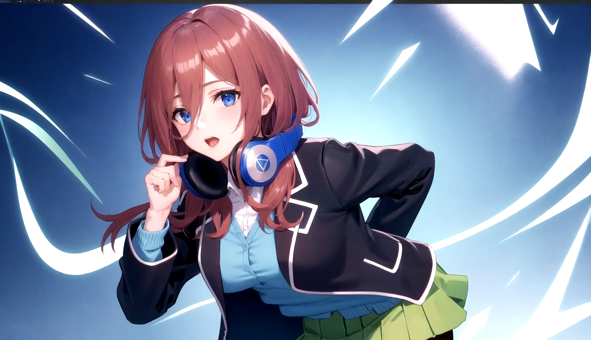
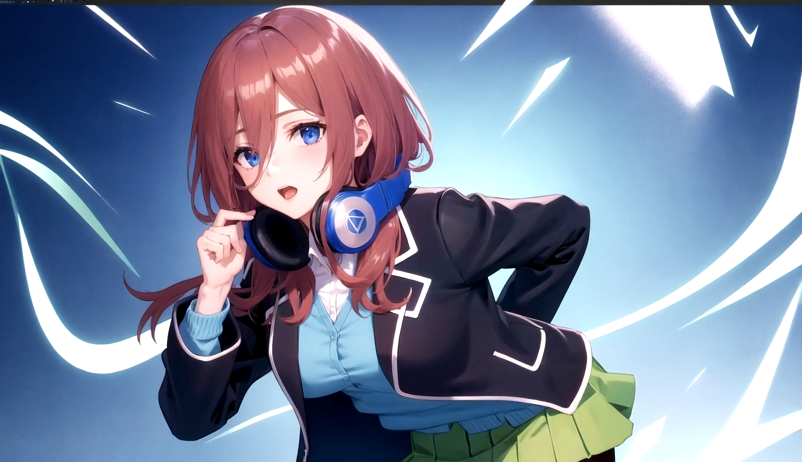

Daftar Isi
- Personal Data
- Pendidikan dan Pengalaman
Personal
| Miku Nakano (中野 三玖) dari Gotoubun No Hanayome | |
|---|---|
|
Miku Nakano adalah salah satu karakter utama dalam serial manga dan anime 5-toubun no Hanayome. Dia adalah salah satu dari kembar lima bersaudara, bersama dengan Ichika, Nino, Yotsuba, dan Itsuki Nakano. Miku adalah anak tertua ketiga dari bersaudara dan berperan sebagai salah satu kekasih utama protagonis, Fuutarou Uesugi. |
|
|
Penampilan : Miku adalah seorang gadis berpenampilan tanpa emosi dengan rambut merah panjang sedang yang memiliki helaian rambut menggantung di sisi kanan wajahnya. Aksesori utamanya adalah satu set headphone nirkabel yang memiliki logo berbentuk segitiga di penutup telinga (Audio-Technica). Seperti saudara perempuannya, dia memiliki mata biru tua, tinggi rata-rata, sosok yang kaya dan payudara besar. Miku biasanya memakai sweter lengan panjang yang menutupi seragamnya. Dia juga mengenakan celana ketat hitam dan memasang headphone di lehernya. Seringkali, sebagian poninya menutupi mata kanannya. Dia memakai ranzel. |
|
| Pengisi Suara Jepang : Ayane Sakura, Miku itou | |
| Foto | |
 

|
|